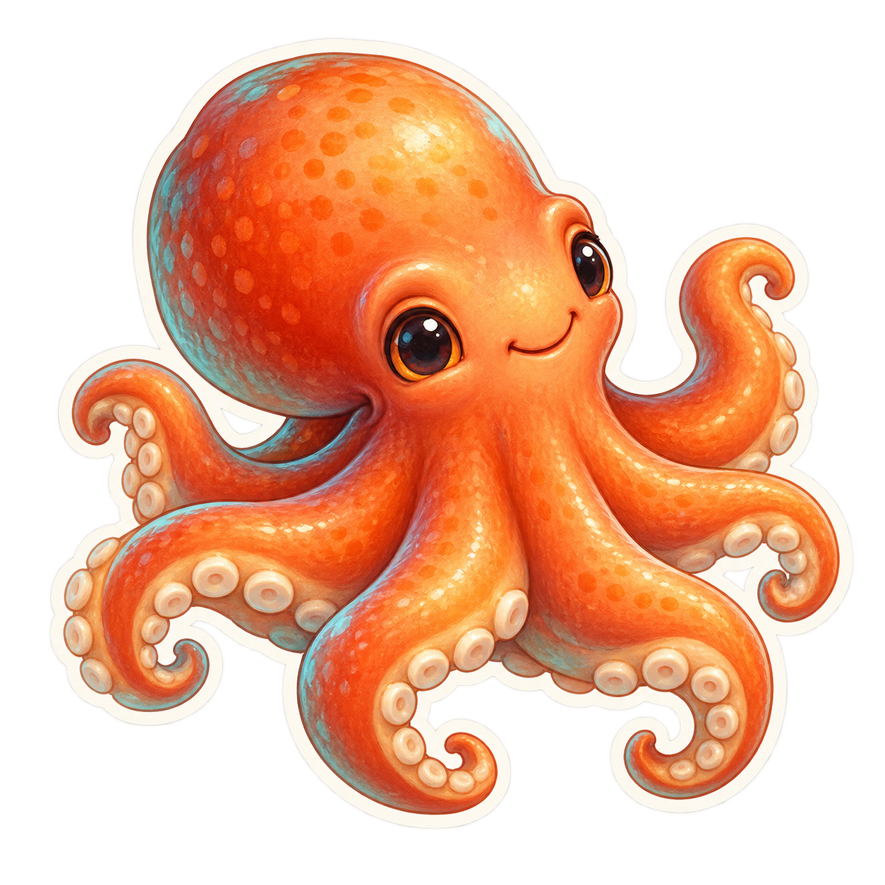

UN JUGUETE. FÍSICA REAL.
Bombea, inclina y encuentra el ángulo. Los aros tienen agujero; las estacas, colisión.

Agujeros físicos, apilado, extracción, bombeo y gravedad en 3D.
Fuerzas y resistencia sobre cuerpos rígidos. El acabado del juguete viene después.